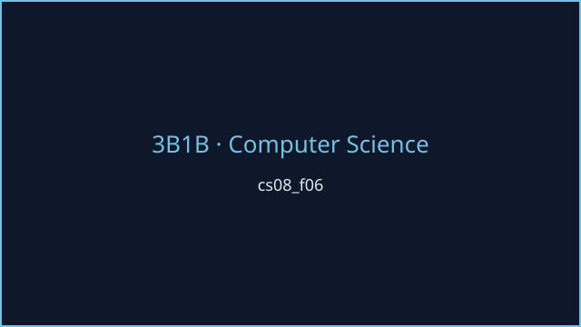

মহামারি মডেলে জনসংখ্যাকে তিন ভাগে ভাগ করা হয়—Suspected (S, সংক্রমিত হতে পারে), Infected (I, বর্তমানে অসুস্থ) ও Recovered (R, সেরে গেছে বা মারা গেছে)। সময়ের সাথে এই তিনের অনুপাত বদলাতে থাকে।
রোগের বিস্তার নির্ভর করে কতজন সংক্রমিত আর কতজন সংবেদনশীল একে অপরের সাথে মিলছে তার ওপর।
সংক্রমিত হওয়ার হার $S$ ও $I$-র গুণফলের সমানুপাতিক—কারণ বেশি মানুষ মিললে বেশি সংক্রমণ। আবার অসুস্থ মানুষ সেরে যাওয়ার হার $I$-র সমানুপাতিক।
এই সরল সমীকরণগুলোই পুরো মহামারির গতিপথ প্রভাবিত করে—ধন্যবাদ কম্পিউটার সিমুলেশনের।
একজন অসুস্থ মানুষ গড়ে যতজনকে সংক্রমিত করে, তা হলো $R_0$। যদি $R_0>1$, মহামারি ছড়ায়; যদি $R_0<1$, সেটি শেষ হয়ে যায়। সাধারণত $R_0=\beta/\gamma$।
কম্পিউটারে আমরা লাখো ''এজেন্ট'' তৈরি করে তাদের মাঝে রোগ ছড়িয়ে দিতে পারি। প্রতিটি সিমুলেশনে ফল কিছুটা আলাদা হয়—এতে বোঝা যায় ভবিষ্যৎ কতটা অনিশ্চিত।
মডেল ভবিষ্যৎ ''ভবিষ্যদ্বাণী'' করে না—এটি দেখায় কোন পরিস্থিতি কতটা সম্ভব।
দূরত্ব, মাস্ক বা টিকা কমালে $\beta$ কমে—ফলে $R_0$ কমে। সংক্রমিতদের সংখ্যার শীর্ষ নিচে নামে ও সময়ে ছড়িয়ে পড়ে। এটিই ''flatten the curve''—হাসপাতালের চাপ কমায়।
আচরণের ছোট পরিবর্তন মডেলে বড় প্রভাব ফেলে—এই শিক্ষা কেবল মহামারি নয়, অনেক সামাজিক ব্যবস্থার ক্ষেত্রেও প্রয়োজনীয়।
নিচের ইন্টারেক্টিভ উপাদান ও কুইজের মাধ্যমে পাঠের ধারণা নিজে যাচাই করুন।
